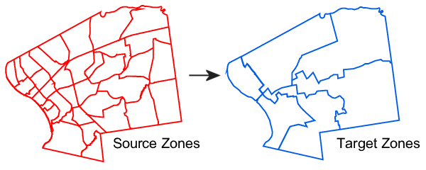
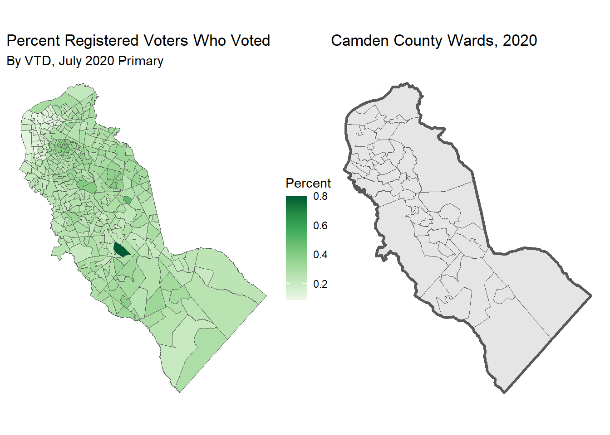
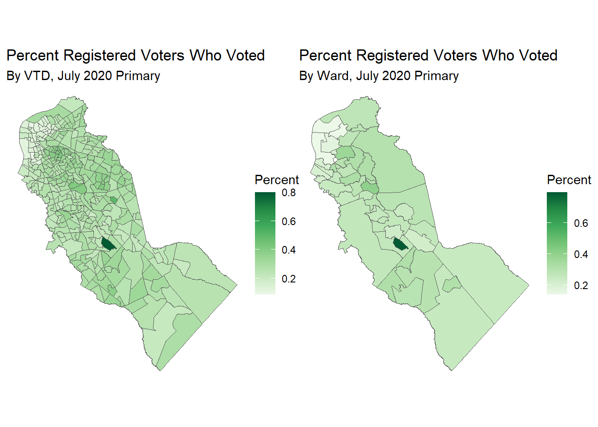

Linking to GEOS 3.12.1, GDAL 3.8.4, PROJ 9.3.1; sf_use_s2() is TRUEExercise 4. Areal Interpolation
Population Profiling with R, August 2024
1 Summary
In this notebook, we will:
- import voting tabulation districts (VTDs) for Camden County NJ that were in use in 2020
- import voter turnout data for 2020
- plot the voter turnout for the July 2020 primary by race
This notebook will feature functions from the following packages:
arealsfdplyrggplotpatchwork
2 Setup
Load the packages we need:
Define the common directory where we’ll save local copies:
my_data_dir <- tools::R_user_dir("datafordemocracy", which = "data")
if (!dir.exists(my_data_dir)) dir.create(my_data_dir, recursive = TRUE)
tools::file_path_as_absolute(my_data_dir)[1] "C:/Users/Andy/AppData/Roaming/R/data/R/datafordemocracy"Import the county boundary for plotting:
3 Areal Interpolation
Areal interpolation is the process making estimates from a source set of polygons to an overlapping but incongruent set of target polygons. This is required if, for example, a researcher wants to derive population estimates for neighborhoods in a U.S. city from the Census Bureau’s census tracts. (Chris Prener).

The areal package does most of the heavy lifting for you, but requires that the target and source layers are:
-
sfobjects - in projected coordinates
3.1 Estimate Voter Turnout by Ward
We have voter turnout data for Camden County NJ for the July 2022 presidential primary election by VTD. But what if we need estimate by ward?
Perhaps we want to give a prize to whichever Ward councilor had the most improved voter turnout. That’s where Areal Interpolation comes in.
First, import the VTD and ward polygon layers (which we created in previous exercises):
Next, plot them side-by-side:
g1 <- ggplot(camden_pri20_vto_vtd_sf, aes(fill = pp20200707_pct_voted_all)) +
geom_sf() +
scale_fill_distiller(palette = "Greens", direction = 1) +
labs(title = "Percent Registered Voters Who Voted",
subtitle = "By VTD, July 2020 Primary",
fill = "Percent") +
theme_void()
g2 <- ggplot(camden_wards20_sf) +
geom_sf() +
geom_sf(data = camden_bnd_sf, fill = NA, lwd = 1.2) +
labs(title = "Camden County Wards, 2020") +
theme_void()
## Display them side-by-side
g1 | g2
3.2 Project the Layers
Next, we need to project these layers. We will project them in to EPSG 3424 (NAD83 / New Jersey (ftUS)) which is used by the NJ Office of GIS.
nj_epsg <- 3424
camden_pri20vto_vtdprj_sf <- camden_pri20_vto_vtd_sf |>
st_transform(nj_epsg)
camden_wards20_prj_sf <- camden_wards20_sf |>
st_transform(nj_epsg)
camden_bnd_prj_sf <- camden_bnd_sf |>
st_transform(nj_epsg)Now we can use areal::aw_interpolate():
intensive or extensive?
If the variables you are trying to resample are percentages, pass their names to intesnsive.
For count variables, use the extensive argument
camden_wards20_vto_pct_sf <- camden_wards20_prj_sf |>
st_make_valid() |>
select(WARD_KEY, COUNTY, MUN_NAME) |>
areal::aw_interpolate(tid = WARD_KEY,
source = camden_pri20vto_vtdprj_sf,
sid = GEOID20,
weight = "sum",
output = "sf",
intensive = "pp20200707_pct_voted_all") |>
rename(PCT_VOTED_EST = pp20200707_pct_voted_all)Inspect the results:
camden_wards20_vto_pct_sf |> head()Plot them side-by-side:
g3 <- ggplot(camden_wards20_vto_pct_sf, aes(fill = PCT_VOTED_EST)) +
geom_sf() +
scale_fill_distiller(palette = "Greens", direction = 1) +
labs(title = "Percent Registered Voters Who Voted",
subtitle = "By Ward, July 2020 Primary",
fill = "Percent") +
theme_void()
g1 | g3
3.3 CHALLENGE
Compute the total number of voters who voted by ward, and map them. Solution
HINT: Remember that count variables require extensive interpolation.
## Your answer hereThink of another variable and/or geography to resample spatially.